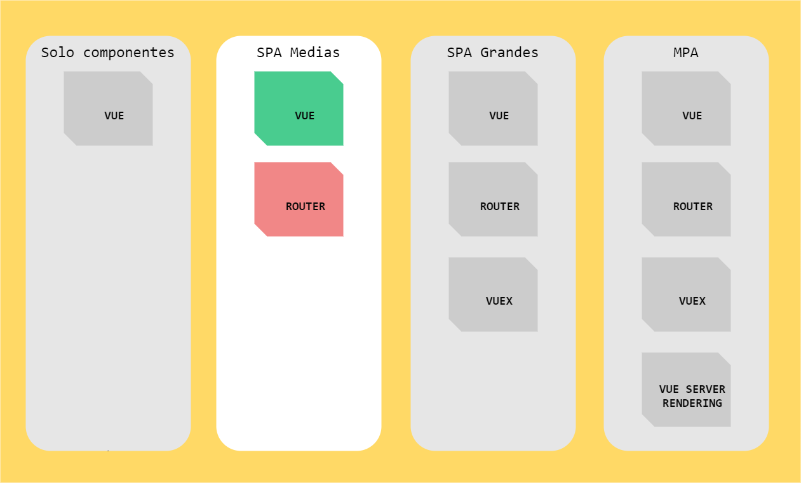
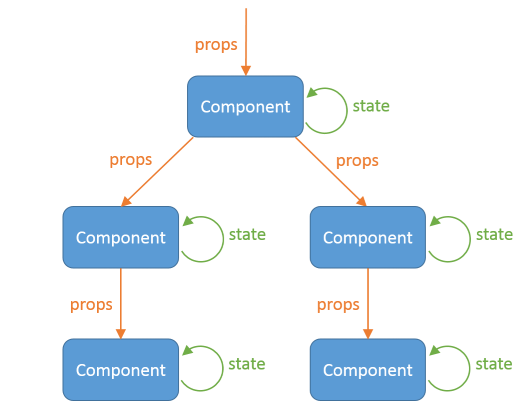

Aprendiendo VueJS
Un ejemplo práctico de cómo usarlo
Jose Dongil
> Desarrollador Web
- Email: jose.dongil@gmail.com
- Twitter: @jdonsan
- Website: el.abismo = de[null]
Desarrollando se vive mejor
BLOQUE I
INTRODUCCIÓN
¿Otro framework más?

Puedo incluir funcionalidad de forma progresiva

En la charla nos centraremos en SPA Medias
Nuestra web como un árbol de componentes

El sistema trabaja de forma reactiva
Compagina 2 tipos de Data Binding

Utiliza Virtual DOM

Sin dependencias, escribe HTML, CSS y JS
No es nada intrusivo en el flujo de trabajo convencional de cualquier front
BLOQUE II
PRACTIQUEMOS UN POCO
Instalamos
1
NodeJS
https://nodejs.org
2
vue-cli
$ npm install vue-cli -g
Nuestra Webapp empieza por MAIN.JS
import Vue from 'vue';
import App from './layouts/app.vue';
new Vue({
el: '#app',
template: '<app/>',
components: { App }
});

Elementos de un template
-
{{ }}
La interpolación
Permiten pintar datos de nuestro modelo por pantalla mediante un marcado de llaves. -
V-
Las directivas
Son atributos HTML personalizados que aumentan el comportamiento de las etíquetas estándar o de los componentes. Los oficiales de Vue empiezan por v- -
|
Los filtros
Son transformaciones visuales sobre datos del modelo. Convertir 2000 en 2.000,00€ por ejemplo.
Ejemplo
Pintar películas si existen resultados
<template>
<subpanel v-if="movies">
<h2>Se han encontrado {{ movies.total_results | normalize }} resultados</h2>
<movie
v-for="movie in movies.results"
:key="movie.id"
:id="movie.id"
:title="movie.title"
:posterPath="movie.poster_path"
:voteAverage="movie.vote_average"
:voteCount="movie.vote_count"
/>
<pagination
:page="movies.page"
:totalPages="movies.total_pages"
@page="searchMovieByPage"
/>
</subpanel>
</template>
DATA
Estado interno de un componente. Son reactivos y mutables. Para nosotros son un objeto plano. Ayudan como esquema interno
METHODS
Son funciones que manejan los eventos disparados por el usuario
COMPUTED
Propiedades que reacciona a cambios realizados en el estado
Comunicación entre componentes

Propiedades y Estados
SLOT
Permite crear componentes cuya etiqueta HTML es de tipo bloque
Esto...
<-- component children -->
<template>
<div>
<h2>{{ title }}</h2>
<slot></slot>
</div>
</template>
<-- component parent -->
<template>
<children title="Hola amigos y amigas">
<h3>Esto es HTML5Spain</h3>
</children>
</template>
... recuerda a esto
// función
function showPanel(title, callback) {
console.log(title);
callback();
}
// ejecución de función
showPanel(
'Hola amigas y amigos',
() => console.log('Esto es HTML5Spain')
);
¿Cómo reutilizo lógica entre componentes?
Con MIXINS
import Vue from 'vue';
import Router from 'vue-router';
import HomeView from '@/views/home-view.vue';
import AboutView from '@/views/about-view.vue';
import MovieView from '@/views/movie-view.vue';
Vue.use(Router);
export default new Router({
routes: [
{ path: '/', name: 'home', component: HomeView },
{ path: '/about', name: 'about', component: AboutView },
{ path: '/movie/:movieId', name: 'movie-detail', component: MovieView, props: true }
]
});
BLOQUE III
CONCLUSIONES
Lo que NO me gusta
-
01. No Web Components
El concepto de componente no sigue el estandar. No hay Shadow DOM
-
02. Todavía bastante configuración
En aplicaciones grandes se sigue necesitando mucha fontanería para que funcionen
-
03. La reactividad de objetos y arrays
La API es bastante fea y puede traer malentendidos al principio. La mejorarán en Vue 3
Lo que SÍ me gusta
-
01. API intuitiva
Fácil de aprender, poco intrusiva, centrada en objetos planos
-
02. Sin dependencias de terceros
Con incluir la librería de Vue, puedo empezar a crear componentes
-
03. Comunidad muy activa
Entorno maduro, con un abánico amplio de herramientas y librerías oficiales y no oficiales
-
04. Documentación Excelente
No necesitas muchos más recursos para aprender. La actualizan al día y es muy usable y completa
Si te apetece saber más, apunta estos recursos
-
Awesome VueJS
Enlace oficial -
Curso de VueJS y Firebase de Juan Andrés Núñez
Listado de vídeos -
Learning VueJS
Página oficial